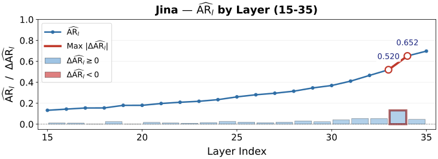
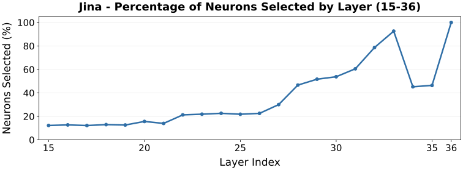
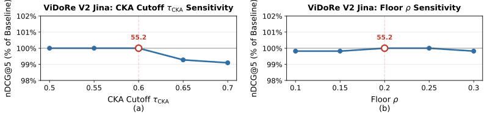

How fast is solar power growing?
Dense retrieval
1 vector / pageLate interaction
Many vectors / pageMINER
1 vector / pageMINER probes selected layers of a frozen retriever, keeps their most useful dimensions and combines them into one dense embedding. Queries and document pages both use this readout. The resulting vectors have the same size as the backbone’s original embeddings and are ranked by the same dot-product search.
Better ranking. MINER improves all three dense backbones on ViDoRe V2 and V3. On V2, MINER-MoCa reaches 59.1, within 0.2 points of ColQwen2.5, the strongest late-interaction model in the comparison.
Faster search. MINER-Jina answers queries 5.3× faster than Jina’s late-interaction mode. Compared with dense Jina, the added work of combining internal signals increases query latency by about 7%.
Smaller index. MINER-Jina needs 42.4× less index storage than late interaction. Its index occupies exactly the same space as dense Jina, with one vector per page.
Better retrieval within a single-vector budget
Presentation slides, scanned reports and scientific posters carry information through text, layout and figures together. Visual document retrievers search these pages directly as images. Late-interaction systems preserve local detail by representing each page with many token vectors, sometimes more than a thousand. A dense retriever stores just one, making the index smaller and search faster, but can lose useful information when it compresses everything into the final-layer embedding.
MINER improves the vector by drawing on information computed inside the retriever. The model’s intermediate layers still contain retrieval-relevant signals that its final embedding does not fully preserve. Reading those signals lets us recover some of the quality gap while retaining single-vector search. Documents and queries are encoded with MINER; the vector dimensions and search procedure stay the same.
Better retrieval across three backbones
We evaluate Jina-Embeddings-v4, Eager-Embed-v1 and MoCa-3B on three ViDoRe benchmark suites. For each backbone, MINER uses only that model’s own training data. The gains therefore come from using its internal representations better, without new supervision.1
Up to 4.5% higher nDCG@5
Up to 2.5% higher nDCG@10
Up to 2.8% higher nDCG@5
On ViDoRe V2, Eager gains 4.5% and Jina gains 3.6% relative to their dense baselines. MINER-MoCa reaches 59.1, close to ColQwen2.5’s 59.3 while retaining a single vector. Jina’s two retrieval modes also allow a comparison on the same backbone: MINER raises its dense score from 53.3 to 55.2, recovering 44% of the gap to late interaction at 57.6.
Full benchmark results and evaluation details
ViDoRe V2 is the primary benchmark. V1 and V2 report nDCG@5; V3 reports nDCG@10. Scores are shown on a 0–100 scale. The relative gains in the chart compare MINER with its own backbone. An asterisk in the tables marks a significant change under a paired test over per-query scores (p < 0.05).
| Model | Size | Bio | Econ | ESG-Human | ESG-Syn | Avg. |
|---|---|---|---|---|---|---|
| Late interaction (multi-vector) | ||||||
| ColPali | 3B | 54.6 | 48.6 | 58.5 | 54.9 | 54.2 |
| ColQwen2 | 2B | 56.3 | 50.6 | 60.4 | 52.5 | 55.0 |
| ColQwen2.5 | 3B | 59.2 | 53.3 | 66.4 | 58.3 | 59.3 |
| Jina (late interaction) | 4B | 60.9 | 51.9 | 65.1 | 52.5 | 57.6 |
| Dense single-vector | ||||||
| SigLIP | 877M | 27.7 | 18.6 | 44.5 | 35.0 | 31.4 |
| VLM2Vec | 4B | 33.2 | 23.3 | 36.3 | 27.8 | 30.1 |
| Jina | 4B | 58.5 | 55.1 | 54.8 | 44.8 | 53.3 |
| Eager | 4B | 63.4 | 56.6 | 51.7 | 52.2 | 56.0 |
| MoCa | 3B | 59.7 | 57.0 | 63.5 | 53.1 | 58.3 |
| Dense single-vector with MINER | ||||||
| MINER-Jina | 4B | 58.6+0.2% | 56.8+3.1%* | 56.8+3.7% | 48.7+8.7%* | 55.2+3.6%* |
| MINER-Eager | 4B | 64.1+1.1%* | 57.8+2.1% | 59.1+14.3%* | 52.9+1.4% | 58.5+4.5%* |
| MINER-MoCa | 3B | 59.2−0.8% | 59.6+4.6%* | 64.8+2.1% | 52.9−0.4% | 59.1+1.4% |
The V2 average gains are significant for Jina and Eager. MoCa’s average gain is not significant at the default hyperparameters, and it falls slightly on Bio and ESG-Syn. On V3, all three backbones improve significantly. On V1, where many subsets are saturated, Eager improves from 82.5 to 84.8 while Jina and MoCa remain within a tenth of a point of their baselines.
| Backbone | ViDoRe V1 (nDCG@5) | ViDoRe V3 (nDCG@10) | ||
|---|---|---|---|---|
| Dense | MINER | Dense | MINER | |
| Jina | 84.3 | 84.4 | 49.0 | 49.7* |
| Eager | 82.5 | 84.8* | 47.6 | 48.8* |
| MoCa | 85.7 | 85.6 | 49.1 | 49.5* |
All results use a CKA cutoff of 0.6 and a sparsity floor of 0.2. Depending on the backbone, probe training takes 11–17 hours on two RTX 4090 GPUs and fusion-head training takes 5–8 hours on one.
Closing the gap at a fraction of the cost
The efficiency comparison uses Jina for all three approaches. With Qdrant, we index the full corpus of each ViDoRe V2 subset and measure query throughput and storage. MINER’s index averages 22.24 MB, the same as dense Jina, compared with 943.38 MB for late interaction.2
Index storage (MB) ↓
Queries / second ↑
The added cost is computing the fused query embedding. Query latency is about 7% above dense Jina, while nDCG@5 rises by 1.9 points. Late interaction retains a 2.4-point quality advantage over MINER on this backbone, at over 40× the index storage and roughly five times the query latency.
Measured efficiency and retrieval scores
| Jina mode | Queries / s | Index (MB) | nDCG@5 |
|---|---|---|---|
| Dense | 15.41 | 22.24 | 53.3 |
| Late interaction | 2.75 | 943.38 | 57.6 |
| MINER | 14.36 | 22.24 | 55.2 |
Useful information survives before the final layer
The internal layers do not all need the same treatment. Some already produce representations aligned with the final retrieval space; others contain useful structure in a different geometry. MINER’s layerwise analysis separates these cases so each layer gets a suitable probe.

For the aligned layers, a Base Probe learns one importance weight per dimension. For the less aligned layers, a Normalized Projection Probe also learns a linear transformation to bring their readouts into the retrieval space. Both probes record which dimensions matter, so the next stage can select them.
How the probes choose and align internal signals
We first apply the backbone’s readout operator at each layer, using either its end-of-sequence token or pooling over tokens. Each text readout is compared with its paired image’s final embedding, and each image readout with its paired text’s final embedding. These paired embeddings are the cross-modal anchors.
Normalized Centered Kernel Alignment (CKA) identifies candidate layers whose representations share useful structure with the anchors. The alignment ratio then compares per-sample cosine similarity with CKA: it distinguishes structure that is already aligned with the final space from structure that needs a transformation. The last three candidate layers use Base Probes, and earlier candidate layers use Normalized Projection Probes.
The probes are shared across text and image inputs. They are trained with an InfoNCE objective against the cross-modal anchors, using in-batch and hard negatives, plus an L1 penalty that makes their importance weights sparse. The projection’s rows are normalized to unit length, while the importance weights track which dimensions matter. Probe definitions and training objective.
Keeping the useful dimensions
MINER uses each layer’s validation performance to decide how many dimensions to retain, then keeps the dimensions with the largest learned importance weights. The fusion head weights and sums the selected signals into one embedding of the backbone’s original size.

Earlier layers contribute sparse features, while the final layers retain most of their dimensions. The dip near layer 34 shows why layer depth alone is not enough to decide how much to keep. Layers at similar depths can contribute different amounts of useful information.
Selection and alignment both contribute
Combining every dimension from the selected layers already improves all three dense backbones. The full MINER improves further. Treating every layer as aligned loses some of the gain; applying the projection to every layer loses much more. The projection helps layers that need realignment and distorts those already aligned.
| Backbone | Dense | All Neurons | All Base | All Norm | MINER |
|---|---|---|---|---|---|
| Jina | 53.3 | 54.6 | 54.9 | 50.0 | 55.2 |
| Eager | 56.0 | 57.1 | 57.4 | 53.1 | 58.5 |
| MoCa | 58.3 | 58.4 | 58.4 | 56.0 | 59.1 |
Sensitivity to layer selection and sparsity
For Jina, moving the CKA cutoff from 0.5 to 0.7 changes the candidate range from layers 12–36 to layers 28–36, yet retrieval quality stays within 1% of the default. Sparsity floors from 0.1 to 0.3 change it by less than 0.2%. Eager and MoCa show similarly flat profiles.
